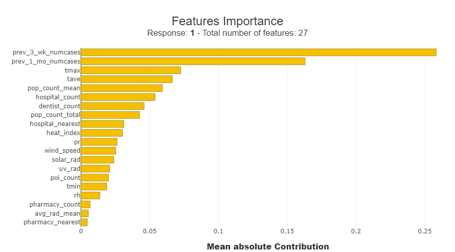
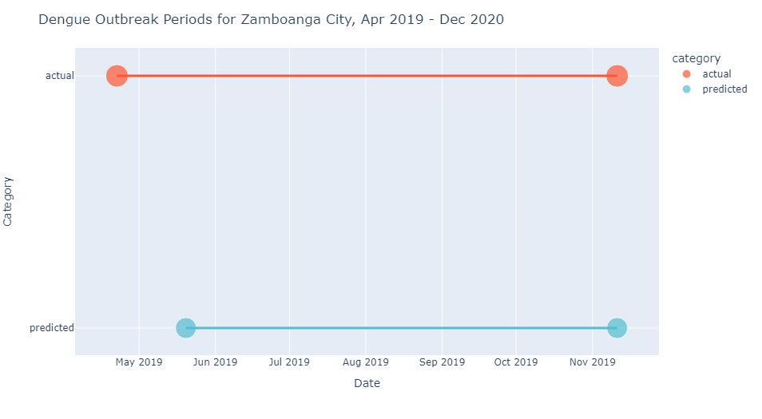
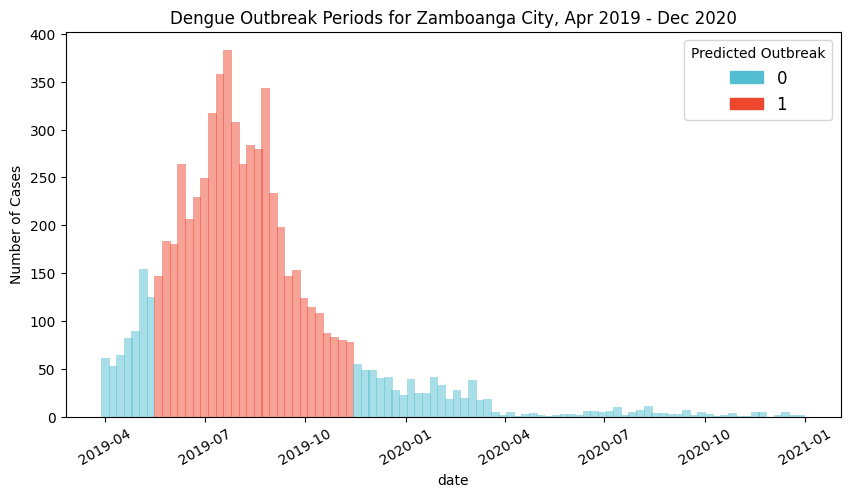
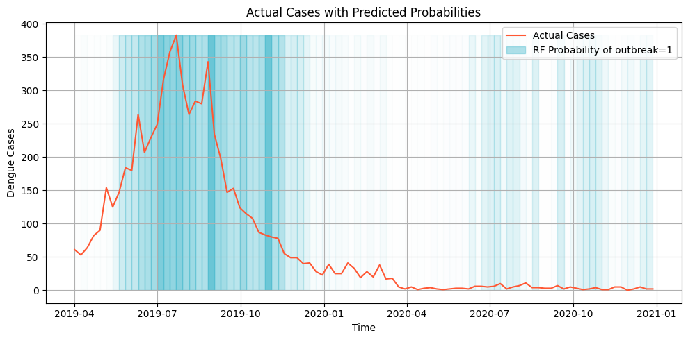

The model code is under Apache 2.0, which allows developers to freely use, modify, and share software on an “as-is” basis, meaning without any warranties. When making changes, developers are required to document changes to the original code.
Specifications
Objective: Predict dengue outbreaks for Zamboanga City at the weekly scale.
The following were included in the input data as features for the model:
Factor
Variables
Climate
temperature, humidity, rainfall, solar radiation, wind speed, vegetation, air quality
Demographics
population, population density
Facilities
clinics, hospitals, sanitation, water source,
Economic activity
nightlights radiance
For this model, we will define the training and testing set as follows:
Set
Time covered
Training
Jan 2014-Mar 2019 (75 mos)
Testing
Apr 2014-Dec 2020 (20 mos)
Method
Generating features
Defining an outbreak
Based on column case_dengue_total, create a new column called outbreak containing 1 if a week is an outbreak week or 0 if not an outbreak week.
For this demo, we define a disease outbreak as follows:
The start of an outbreak occurs when the week’s cases are equal to or higher than a threshold.
The threshold is defined as the 75th percentile of total weekly cases based on years when a substantial number of cases are recorded.
The end of an outbreak occurs during the week when cases fall below the threshold for at least 2 weeks.
This is implemented in the code as follows:
Definition 1
# Create a new column 'outbreak' initialized with zeroslinked_data["outbreak"] =0# Track weeks satisfying the threshold, and count consecutive outbreak weeksconsecutive_weeks_below_threshold =0previous_outbreak =Falsefor index, row in linked_data.iterrows():if row["case_total_dengue"] > OUTBREAK_THRESHOLD: consecutive_weeks_below_threshold =0 previous_outbreak =True linked_data.at[index, "outbreak"] =1else:# check if previous week was an outbreak# if yes, continue to tag current week as outbreak# part of observation periodif previous_outbreak and consecutive_weeks_below_threshold <2: linked_data.at[index, "outbreak"] =1 consecutive_weeks_below_threshold +=1elif consecutive_weeks_below_threshold ==2: linked_data.at[index, "outbreak"] =0 previous_outbreak =Falseelse: linked_data.at[index, "outbreak"] =0
Adding lagged features
Adding previous weeks’ cases as features may help enhance the model’s capability in predicting future cases.
Experiment with the lagged features by adding or removing them. Here, we include lagged features based on cases from the past 1-4 weeks leading up to the current week.
This is implemented in the code as follows:
# Uncomment lines if you want to explore the other lagslagged_linked_data = linked_data.assign(# prev_1_wk_numcases=linked_data["case_total_dengue"].shift(# 1, fill_value=0# ), # cases a week before#prev_2_wk_numcases=linked_data["case_total_dengue"].shift(# 2, fill_value=0#), # cases 2 weeks before prev_3_wk_numcases=linked_data["case_total_dengue"].shift(3, fill_value=0 ), # cases 3 weeks before prev_1_mo_numcases=linked_data["case_total_dengue"].shift(4, fill_value=0 ), # cases 1 month before)print(lagged_linked_data.shape)lagged_linked_data.head()
(469, 30)
date
avg_rad_mean
clinic_count
clinic_nearest
dentist_count
dentist_nearest
doctors_count
doctors_nearest
heat_index
hospital_count
...
solar_rad
tave
tmax
tmin
uv_rad
wind_speed
case_total_dengue
outbreak
prev_3_wk_numcases
prev_1_mo_numcases
0
2014-01-06
0.476876
0.0
10000.0
0.0
10000.0
0.0
10000.0
27.864492
3.0
...
164.324125
26.074474
27.189105
25.145137
20.508032
3.735253
48.0
0
0.0
0.0
1
2014-01-13
0.476876
0.0
10000.0
0.0
10000.0
0.0
10000.0
26.423877
3.0
...
171.025991
25.301183
26.346243
24.495746
21.555577
5.431501
71.0
0
0.0
0.0
2
2014-01-20
0.476876
0.0
10000.0
0.0
10000.0
0.0
10000.0
26.219015
3.0
...
216.642606
25.210041
26.767400
24.052373
26.568703
4.394535
82.0
1
0.0
0.0
3
2014-01-27
0.476876
0.0
10000.0
0.0
10000.0
0.0
10000.0
26.089990
3.0
...
254.635173
25.179454
26.913508
23.807367
29.716182
3.747729
72.0
1
48.0
0.0
4
2014-02-03
0.476876
0.0
10000.0
0.0
10000.0
0.0
10000.0
28.017441
3.0
...
252.872288
26.121420
27.823145
24.755817
30.152179
1.899688
80.0
1
71.0
48.0
5 rows × 30 columns
Model training
Since the training dataset has a time component, we use TimeSeriesSplit from sklearn to properly cross-validate the model. Here is how it splits the training data in the time dimension.
# Illustrate time series split.# You may experiment the splits by changing the `n_splits` parameter.# Increasing the `n_splits` would give a narrower time period for the test set.tss = TimeSeriesSplit(n_splits=5)for i, (split_train_index, split_test_index) inenumerate(tss.split(X_train)):print(f'Split {i}:') split_X_train, split_X_test = X_train.iloc[split_train_index, :], X_train.iloc[split_test_index, :] split_y_train, split_y_test = y_train.iloc[split_test_index], y_train.iloc[split_test_index]print(split_X_train.index.min(), split_X_train.index.max())print(split_y_train.index.min(), split_y_train.index.max())
The model chosen for the demo is the random forest (RF) classifier. It is a ensemble machine learning method that constructs multiple decision trees from subsets of the training and averages over all these terrs to produce the final classification. Random forest classifiers are commonly used in various tasks like credit risk assessment, disease diagnosis, and customer churn prediction due to their high accuracy and ability to handle large datasets.
The RF classifier model is tuned using the GridSearchCV function from sklearn performs model scoring by going over all combinations of specified parameter values, called the parameter space.
# Define parameter space to optimizeparam_grid = {"n_estimators": [50, 100, 200, 300, 500],"max_depth": [None, 5, 10, 15, 20],}
# Run GridSearchmodel_grid_search = GridSearchCV(classifier, param_grid, verbose=1, cv=tss)model_grid_search.fit(X_train, y_train)
Fitting 5 folds for each of 25 candidates, totalling 125 fits
In a Jupyter environment, please rerun this cell to show the HTML representation or trust the notebook. On GitHub, the HTML representation is unable to render, please try loading this page with nbviewer.org.
# Show results of model trainingprint(f"Best hyperparameters: {model_grid_search.best_params_}")print(f"Train best score: {model_grid_search.best_score_:0.4}")print(f"Train best score std: {np.std(model_grid_search.cv_results_['mean_test_score']):0.4}")
Best hyperparameters: {'max_depth': None, 'n_estimators': 200}
Train best score: 0.8489
Train best score std: 0.007221
Using our training setup, the model predicted outbreak labels with 84.89% accuracy.
# Show results# Evaluate the model on test databest_rf_classifier_model = model_grid_search.best_estimator_test_accuracy = best_rf_classifier_model.score(X_test, y_test)print("Test Accuracy:", test_accuracy)
Test Accuracy: 0.9565217391304348
The tuned model predicts weekly outbreak labels with 95.65% accuracy.
To add detail, we can also view more metrics of the RF classification predictions using classification_report from sklearn.
In our test set, we have 61 weeks that have no outbreaks and 30 weeks that have outbreaks. While the overall score is 94.5%, notice that the scores are slightly lower at 90-93% for the outbreak=1 category than outbreak=0.
Feature importance
SHAP (SHapley Additive exPlanations) is a method used in machine learning for explaining individual predictions. It assigns each feature an importance value by considering its contribution to the difference between the actual prediction and the average prediction. Read up more on this method here.

From the results of SHAP, the features that drove the predictions are the cases from the previous weeks, the climate variables for temperature tmax and tave, and the mean population count.
Detected outbreaks

Based on actual data, there is only one outbreak period for the target timespan, a 30-week event from 2019-04-22 to 2019-11-11. The model predicted a 26-week outbreak period from 2019-05-20 to 2019-11-11, which was detected 4 weeks after actual, and ended on the same week.
While most of the outbreak period was covered, the model still needs to be trained to be more sensitive to the start of the outbreak, which is crucial for early intervention.

The model was able to determine outbreaks for the consectuve weeks in 2019-05-20 to 2019-11-11, when actual data records 75-380 weekly cases.
For the rest of 2020, it was also able to correctly identify that there should be no outbreaks during that year.
Probabilities
The sklearnpredict_proba method calculates the probability estimates of each class produced by a model. It returns an array containing the probability (0.0 to 1.0) of a single record belonging to a particular class. The predicted probabilities can be visualized through a colored histogram of the values.

In this plot, the line plot represents the number of cases over time and the gradient in the background represents the predicted probablity of an outbreak for that week. The darker the color the more likely it is to be classified as an outbreak.
Weeks with sudden spikes are able to identified by the model as an outbreak along with the succeeding high weeks. It can also be seen in the plot that even during the low number of cases in 2020, the model is able to predict slightly higher probability for the weeks with sudden spikes. This can indicate some potential in using the probabilities as a signal for preparations for early intervention.
Recommendations
Consider the following when trying to explore modelling with our dataset.
Pick another classifier model, such as other tree-based models like XGBoost, or one with a different prediction mechanic, such as kNN. These may potentially enhance model accuracy and robustness.
Experiment more with feature engineering by selecting variables with more resolved temporal scales, such as climate variables, by analyzing statistics over weekly intervals rather than just mean values.
Validate the model’s applicability across diverse scenarios by testing it on data from another city or disease, acknowledging potential variations in performance while emphasizing the generalizability of the methodology.